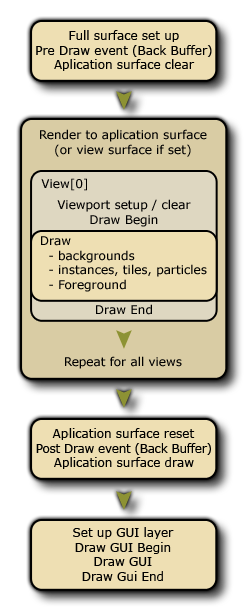

The Draw Event is the one that governs what you see on
the screen when you run your game, and it is split into various
separate sub-events to better handle the different drawing
requirements for your game. The image below illustrates the order
in which each event is performed:  The normal Draw event falls
into three sub-event types: The Draw Begin, the standard
Draw and the Draw End events. In general, you will
only need to use the standard Draw sub-event and you should
be aware that all instances in a room will have this event
triggered each step of the game, so this sub-event will always
be called as long as the instance has the visible flag set
to true. Even if you have defined nothing for this sub-event in
the object properties (ie: no code nor actions), if the object has
a sprite assigned it will still have a draw sub-event which
will be triggered. This is because GameMaker Studio 2 has
two ways to draw things in the Draw sub-event: application
- the default draw, which is when you define the sprite in
the object properties and place no actions or code in the normal
Draw sub-event, in which case GameMaker Studio 2 will
draw that sprite. Note that any transforms you perform in other
events to change the image scale, index, blending etc... will be
reflected too as long as the draw event is empty.
- the custom draw, which is when you place code or actions
in the draw event. This is telling GameMaker Studio 2 "I
want to control what you draw for instances of this object" and it
completely overrides the default drawing. This means that, for
example, you can have an object with a sprite assigned, then set
the draw event to draw text and the sprite will not be drawn as you
have not told GameMaker Studio 2 to draw it along with the
text.
The rest of the draw events are explained in the sections listed below:
Apart from the main Draw sub-event, you also have a Draw Begin and a Draw End sub-event too. These act exactly the same as a standard Draw sub-event (ie: they will draw whatever you put in them every step of the game and for all views), but they do not "default draw" anything if not added to an object, and they will always run before/after the standard Draw sub-event. So, you would have the Draw Begin step for all instances, then the Draw for all instances, then finally the Draw End step for all instances.
In this way, you can draw things or set draw properties in the Draw Begin step in one instance and be sure that all instances with a standard Draw event or Draw End event will use these properties or draw over what the first instance has drawn. Basically its a sure fire way to guarantee that certain things are drawn at certain times, much like the Begin Step and End Step events do.
There are a few things to note when drawing things in GameMaker Studio 2, whether it's a sprite you are drawing or a shader, or 3D:
- The draw event is a very intensive event, in that it's one of the events that takes up most time and resources... to that end it is never a good idea to do anything in the draw event other than drawing. So save your large code or complex actions for the Step event or Alarms or whatever other event fits, but leave the draw event clear for the drawing as that's what it does best.
- If your object has had the visible parameter set to off (so that the instances of the object are not drawn) then all draw events are skipped (except for the Resize event). This means that making an instance invisible will stop all code placed in any of these events from running, so don't put essential code in the draw events if they are not going to be visible.
- What you draw has nothing to do with the collision engine you choose (traditional or physics) as that is defined by the object properties and the sprite (or mask) that the object has been given.
The Draw GUI sub-event type falls under the Draw Event category and is specifically designed for drawing GUI (Graphical User Interface) elements that are not affected by the view scale or rotation. This means that you can have an instance draw all the elements for your HUD without having to base all the positioning of the elements on the the instance position within the room or the position of the current view.
When drawing in these event it is important that you understand that the draw coordinates do not change even when views are active and (0,0) is always the top left hand corner of either the application surface or the display (see the note at the bottom of this section), and the default width and height are 1:1 with the application surface. Depth ordering is still maintained between different instances on different layers (so an instance on a lower layer will draw under one at a higher layer) and also within the events themselves, as the Draw GUI Begin sub-event will draw for all instances first, then the standard Draw GUI will draw for all instances over that, and finally the Draw Gui End sub-event is triggered.
In this way, you can draw things or set draw properties in the Draw GUI Begin in one instance and be sure that all instances with a standard Draw GUI or Draw GUI End sub-events will use these properties or draw over what the first instance has drawn. Basically it's a sure fire way to guarantee that certain things are drawn at certain times, much like the Begin Step and End Step sub-events do.
These events can also be used in conjunction with the normal Draw sub-events (which will be affected by the view position, scale and rotation as normal). If you have no Draw Event but you do have a Draw GUI Event, then GameMaker Studio 2 will still default draw the sprite for the instance (if it has one) as normal.
With relation to the other draw sub-events, the Draw GUI events will always draw over anything drawn in the normal draw events. So, if you have an instance on a lower layer with a Draw GUI event, it will draw over the instance that is on a higher layer with a regular draw event. If both instances have a Draw GUI sub-event, then the layer order will be respected.
NOTE: This event will, by default, draw 1:1 with the application surface size, which is normally the size of the room or the view port. This means that when you have Aspect Ratio Correction on in the Game Options the GUI is not going to be drawn over the black bars that "letterbox" the game. This behavior can be switched off using the display_set_gui_maximise function, and you can also lock the GUI event to a specific size which will then be scaled to fit the display or application surface dimensions automatically by using the function display_set_gui_size.
The Pre Draw and Post Draw sub-events are part of the Draw Event category. However, unlike the other Draw events these draw directly to the screen buffer, which will be the size of the combined screen space for all views currently visible, or the window size if only using one view or none at all. The image below illustrates this:So, if you are using the Pre or Post draw events, you are drawing to the full screen render target which will have the same size as the window to which all views are made to fit. If you have no views active, this is instead set to the size of the window itself.
The Pre Draw sub-event is triggered before any other draw event, and in it you can set values, set draw properties and even draw things without worrying about the views or the size of the GUI layer (the GUI layer size may be the same as the screen buffer, but it may not since you can set the GUI resolution in code).
It is worth noting that this event happens before the screen buffer is cleared meaning that if you do not switch off view clearing in the room editor then nothing that is drawn in the Pre Draw event will be seen, as the first view will clear it. If you want to be able to see through the views themselves, or you are not using views at all, then you should also have set the background colour to have an alpha of 0 in the Room Editor.
NOTE: If you switch off these options, you may notice unwanted artefacts being drawn on the screen when the game is tested (like "trails" from instances). This is because you are drawing directly over the previous frame of the draw buffer without it being cleared. However you can use draw_clear_alpha to do this yourself.
The Post Draw sub-event is triggered after the standard draw events, but before the Draw GUI events. Like the Pre Draw event, it is based on the size of the screen buffer size, and is placed before the Draw GUI events to enable you to perform post-processing effects and other things on a full screen basis simply and easily without interfering with any HUD/GUI elements that you may have in your game.
This event type falls under the Draw Event category, and although it doesn't actually draw anything, it does react to changes in the draw canvas - specifically, it is designed for reacting to the change in the UWP canvas size when the game window is "snapped".
On the UWP target platform it is important that you catch any resizing of the game canvas from the "snapping" of the game window (when the user drags the window to the side of the display, for example). This event will do just that and is triggered every time the canvas is changed, permitting you to add custom code here that will resize the view or reposition HUD elements as necessary. This function is provided as a convenient way to avoid having step event code that checks for these things all the time.
NOTE: You cannot draw in this event! It is triggered by resizing the canvas and is only for catching this change... any drawing that should be done still must be in one of the other draw events.